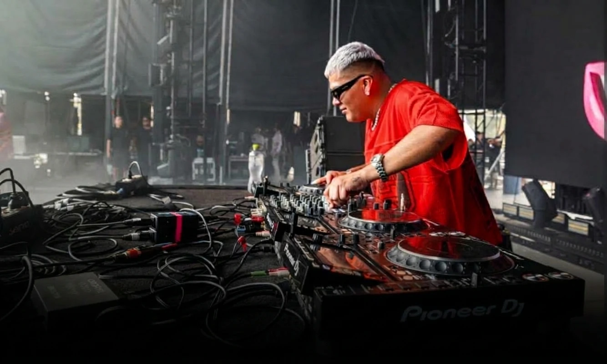
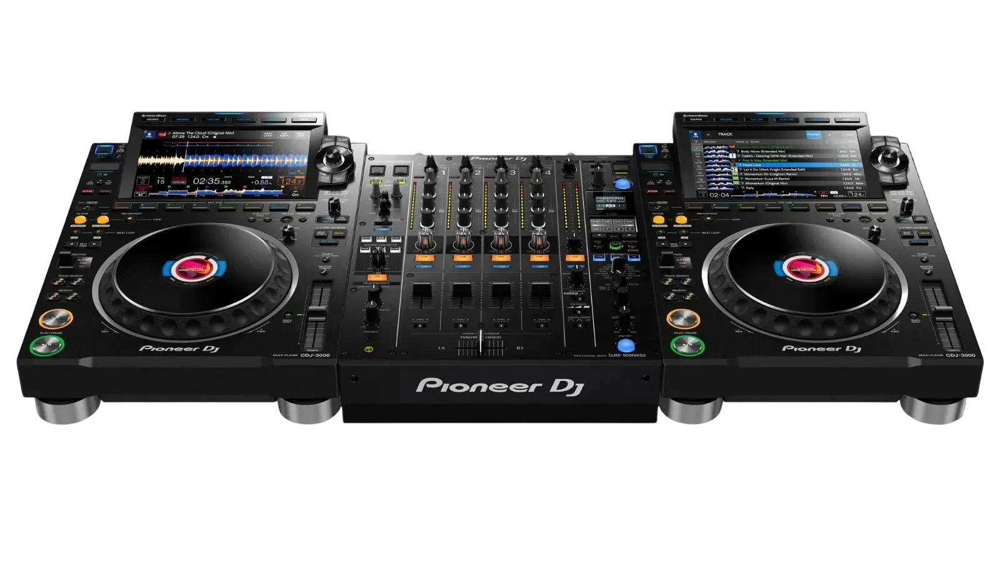

DJ • Productor • Artista
Con más de 8 años de trayectoria, J Mauri ha llevado su sonido a muchos de los clubes y escenarios más destacados de la Ciudad de México y toda la República Mexicana, de norte a sur, expandiendo su presencia también a nivel internacional.
Desde 2023 ha realizado dos giras por Colombia, consolidando su proyección fuera de México. A lo largo de su carrera ha compartido escenario con artistas como DJ Playero, Kevin Roldán, Bellakath, Standly, El Bogueto y Carlos Cortés. Además, ha participado como DJ oficial en giras de Snow Tha Product, Milo Mae y Mad Fuentes.
Su recorrido incluye presentaciones en EDC México (2022 y 2025), Coca-Cola Flow Fest, Festival Internacional Cervantino, Auditorio BB y Festival Dale Mixx. También ha sido DJ oficial de las campañas de Champion en México y una de las figuras principales del colectivo Perreo de Antes.
Detrás de las tornamesas, J Mauri desarrolla una identidad propia como productor, con más de 23 lanzamientos y cerca de 700,000 reproducciones en Spotify.
Entre sus temas más escuchados destacan Déjate Llevar (junto a Jey F), Animal y Mundo Diferente.
En 2026 presenta Ciudad Romántica, un mixtape colaborativo que marca un nuevo capítulo en su evolución musical.

Micrófono inalámbrico · Monitor de referencia · Agua embotellada · Hospitalidad · Espacio para artista y Staff.